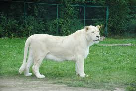
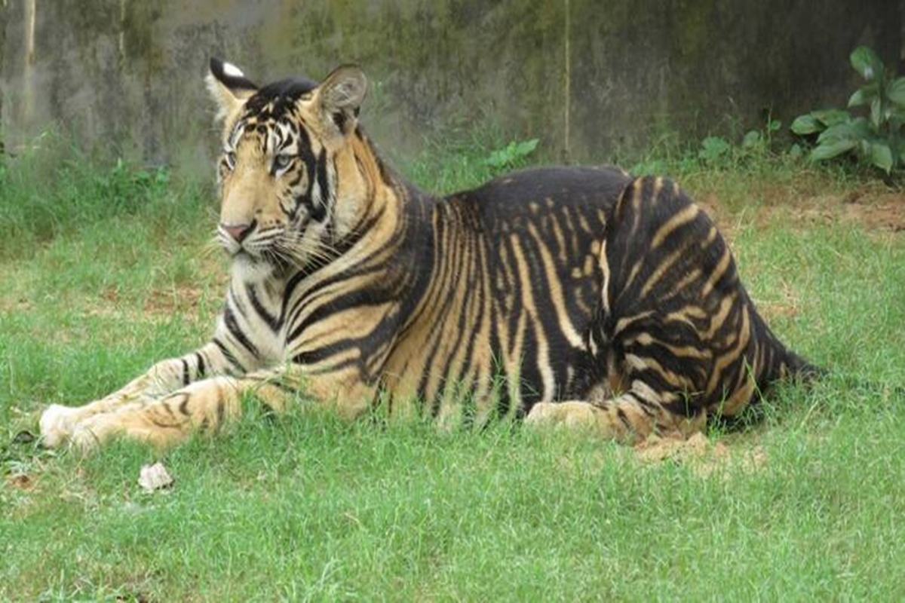

WILD ANIMALS NEWS

The cheetah lives in three main social groups: females and their cubs, male "coalitions", and solitary males. While females lead a nomadic life searching for prey in large home ranges, males are more sedentary and instead establish much smaller territories in areas with plentiful prey and access to females. The cheetah is active during the day, with peaks during dawn and dusk. It feeds on small- to medium-sized prey, mostly weighing under 40 kg (88 lb), and prefers medium-sized ungulates such as impala, springbok and Thomson's gazelles. The cheetah typically stalks its prey to within 60–70 m (200–230 ft), charges towards it, trips it during the chase and bites its throat to suffocate it to death. It breeds throughout the year. After a gestation of nearly three months, a litter of typically three or four cubs is born. Cheetah cubs are highly vulnerable to predation by other large carnivores such as hyenas and lions. They are weaned at around four months and are independent by around 20 months of age.
The cheetah occurs in a variety of habitats such as savannahs in the Serengeti, arid mountain ranges in the Sahara and hilly desert terrain in Iran. The cheetah is threatened by several factors such as habitat loss, conflict with humans, poaching and high susceptibility to diseases. Historically ranging throughout most of Sub-Saharan Africa and extending eastward into the Middle East and to central India, the cheetah is now distributed mainly in small, fragmented populations in central Iran and southern, eastern and northwestern Africa. In 2016, the global cheetah population was estimated at 7,100 individuals in the wild; it is listed as Vulnerable on the IUCN Red List. In September 2022, they were reintroduced to India after being extinct in the country for 70 years. In the past, cheetahs were tamed and trained for hunting ungulates. They have been widely depicted in art, literature, advertising, and animation.

The lion (Panthera leo), or lioness for females, is a large cat of the genus Panthera native to Africa and India. It has a muscular, broad-chested body; short, rounded head; round ears; and a hairy tuft at the end of its tail. It is sexually dimorphic; adult male lions are larger than females and have a prominent mane. It is a social species, forming groups called prides. A lion's pride consists of a few adult males, related females, and cubs. Groups of female lions usually hunt together, preying mostly on large ungulates. The lion is an apex and keystone predator; although some lions scavenge when opportunities occur and have been known to hunt humans, lions typically don't actively seek out and prelion (Panthera leo),
or lioness for females, The lion inhabits grasslands, savannas and shrublands. It is usually more diurnal than other wild cats, but when persecuted, it adapts to being active at night and at twilight. During the Neolithic period, the lion ranged throughout Africa and Eurasia from Southeast Europe to India, but it has been reduced to fragmented populations in sub-Saharan Africa and one population in western India. It has been listed as Vulnerable on the IUCN Red List since 1996 because populations in African countries have declined by about 43% since the early 1990s. Lion populations are untenable outside designated protected areas. Although the cause of the decline is not fully understood, habitat loss and conflicts with humans are the greatest causes for concern.is a large cat of the genus Panthera native to Africa and India. It has a muscular, broad-chested body; short, rounded head; round ears; and a hairy tuft at the end of its tail. It is sexually dimorphic; adult male lions are larger than females and have a prominent mane. It is a social species, forming groups called prides. A lion's pride consists of a few adult males, related females, and cubs. Groups of female lions usually hunt together, preying mostly on large ungulates. The lion is an apex and keystone predator; although some lions scavenge when opportunities occur and have been known to hunt humans, lions typically don't actively seek out and prey on humans.

The tiger is among the most recognisable and popular of the world's charismatic megafauna. It featured prominently in the ancient mythology and folklore of cultures throughout its historic range and continues to be depicted in modern films and literature, appearing on many flags, coats of arms and as mascots for sporting teams. The tiger is the national animal of India, Bangladesh, Malaysia and South Korea.
The tiger (Panthera tigris) is the largest living cat species and a member of the genus Panthera. It is most recognisable for its dark vertical stripes on orange fur with a white underside. An apex predator, it primarily preys on ungulates, such as deer and wild boar. It is territorial and generally a solitary but social predator, requiring large contiguous areas of habitat to support its requirements for prey and rearing of its offspring. Tiger cubs stay with their mother for about two years and then become independent, leaving their mother's home range to establish their own.

an eagle is any bird of prey more powerful than a buteo. An eagle may resemble a vulture in build and flight characteristics but has a fully feathered (often crested) head and strong feet equipped with great curved talons. A further difference is in foraging habits: eagles subsist mainly on live prey.
Eagle is the common name for many large birds of prey of the family Accipitridae. Eagles belong to several groups of genera, some of which are closely related. Most of the 68 species of eagle are from Eurasia and Africa.[1] Outside this area, just 14 species can be found—2 in North America, 9 in Central and South America, and 3 in Australia.
Eagles are not a natural group but denote essentially any kind of bird of prey large enough to hunt sizeable (about 50 cm long or more overall)